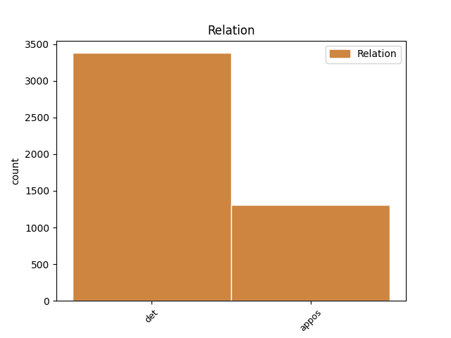
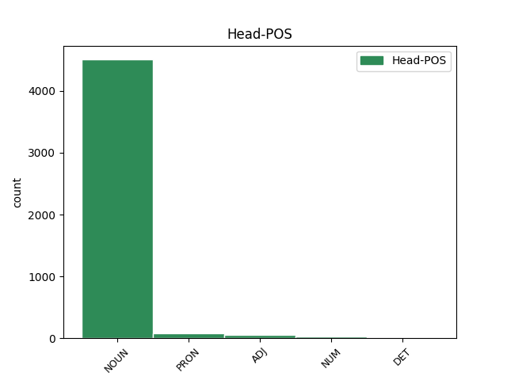
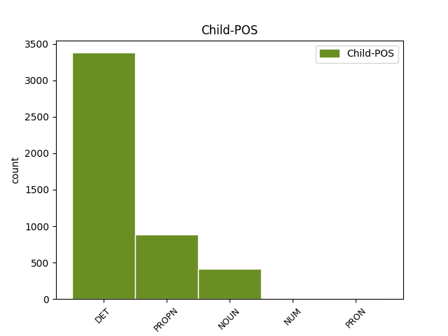

Distribution of features within this leaf



Agreement Rules sorted by frequency.
- When the dependent token is the determiner(det) of the head token, and the head token is NOUN and the dependent token is DET.
1 Wszyscy _ _ _ _ 0 _ _ _
2 podzielamy _ _ _ _ 0 _ _ _
3 tę ten DET adj:sg:acc:f:pos Case=Acc|Gender=Fem|Number=Sing|PronType=Dem 5 det _ _
4 samą _ _ _ _ 0 _ _ _
5 ideę idea NOUN subst:sg:acc:f Case=Acc|Gender=Fem|Number=Sing 0 _ _ _
6 : _ _ _ _ 0 _ _ _
7 mamy _ _ _ _ 0 _ _ _
8 swobodę _ _ _ _ 0 _ _ _
9 przepływu _ _ _ _ 0 _ _ _
10 orzeczeń _ _ _ _ 0 _ _ _
11 sądowych _ _ _ _ 0 _ _ _
12 . _ _ _ _ 0 _ _ _
1 Jak _ _ _ _ 0 _ _ _
2 podkreślono _ _ _ _ 0 _ _ _
3 we _ _ _ _ 0 _ _ _
4 wspólnej _ _ _ _ 0 _ _ _
5 deklaracji _ _ _ _ 0 _ _ _
6 delegacji delegacja NOUN subst:sg:gen:f Case=Gen|Gender=Fem|Number=Sing 0 _ _ _
7 ITER ITER PROPN subst:sg:gen:f Case=Gen|Gender=Fem|Number=Sing 6 appos _ SpaceAfter=No
8 , _ _ _ _ 0 _ _ _
9 uczestnictwo _ _ _ _ 0 _ _ _
10 Indii _ _ _ _ 0 _ _ _
11 oznacza _ _ _ _ 0 _ _ _
12 , _ _ _ _ 0 _ _ _
13 że _ _ _ _ 0 _ _ _
14 w _ _ _ _ 0 _ _ _
15 projekcie _ _ _ _ 0 _ _ _
16 jest _ _ _ _ 0 _ _ _
17 teraz _ _ _ _ 0 _ _ _
18 reprezentowana _ _ _ _ 0 _ _ _
19 połowa _ _ _ _ 0 _ _ _
20 ludności _ _ _ _ 0 _ _ _
21 świata _ _ _ _ 0 _ _ _
22 . _ _ _ _ 0 _ _ _
1 26 _ _ _ _ 0 _ _ _
2 Na _ _ _ _ 0 _ _ _
3 podstawie _ _ _ _ 0 _ _ _
4 sprawozdania _ _ _ _ 0 _ _ _
5 sędziego sędzia NOUN subst:sg:gen:m1 Animacy=Hum|Case=Gen|Gender=Masc|Number=Sing 0 _ _ _
6 sprawozdawcy sprawozdawca NOUN subst:sg:gen:m1 Animacy=Hum|Case=Gen|Gender=Masc|Number=Sing 5 appos _ _
7 Sąd _ _ _ _ 0 _ _ _
8 ( _ _ _ _ 0 _ _ _
9 piąta _ _ _ _ 0 _ _ _
10 izba _ _ _ _ 0 _ _ _
11 ) _ _ _ _ 0 _ _ _
12 postanowił _ _ _ _ 0 _ _ _
13 otworzyć _ _ _ _ 0 _ _ _
14 procedurę _ _ _ _ 0 _ _ _
15 ustną _ _ _ _ 0 _ _ _
16 . _ _ _ _ 0 _ _ _
1 I _ _ _ _ 0 _ _ _
2 wplata _ _ _ _ 0 _ _ _
3 się _ _ _ _ 0 _ _ _
4 w _ _ _ _ 0 _ _ _
5 to ten DET adj:sg:acc:n:pos Case=Acc|Gender=Neut|Number=Sing|PronType=Dem 6 det _ _
6 wszystko wszystko PRON subst:sg:acc:n:ncol Case=Acc|Gender=Neut|Number=Sing|PronType=Tot 0 _ _ _
7 uwielbienie _ _ _ _ 0 _ _ _
8 dla _ _ _ _ 0 _ _ _
9 technologii _ _ _ _ 0 _ _ _
10 Pentagonu _ _ _ _ 0 _ _ _
11 . _ _ _ _ 0 _ _ _
1 - _ _ _ _ 0 _ _ _
2 w _ _ _ _ 0 _ _ _
3 rzeźniach _ _ _ _ 0 _ _ _
4 , _ _ _ _ 0 _ _ _
5 w _ _ _ _ 0 _ _ _
6 których _ _ _ _ 0 _ _ _
7 dokonuje _ _ _ _ 0 _ _ _
8 się _ _ _ _ 0 _ _ _
9 tylko _ _ _ _ 0 _ _ _
10 uboju _ _ _ _ 0 _ _ _
11 świń _ _ _ _ 0 _ _ _
12 urodzonych _ _ _ _ 0 _ _ _
13 i _ _ _ _ 0 _ _ _
14 tuczonych _ _ _ _ 0 _ _ _
15 we _ _ _ _ 0 _ _ _
16 własnych _ _ _ _ 0 _ _ _
17 zakładach _ _ _ _ 0 _ _ _
18 hodowlanych _ _ _ _ 0 _ _ _
19 i _ _ _ _ 0 _ _ _
20 które który DET adj:pl:nom:f:pos Case=Nom|Gender=Fem|Number=Plur|PronType=Rel 21 det _ _
21 same sam ADJ adj:pl:nom:f:pos Case=Nom|Degree=Pos|Gender=Fem|Number=Plur 0 _ _ _
22 zajmują _ _ _ _ 0 _ _ _
23 się _ _ _ _ 0 _ _ _
24 rozbiorem _ _ _ _ 0 _ _ _
25 wszystkich _ _ _ _ 0 _ _ _
26 uzyskanych _ _ _ _ 0 _ _ _
27 tusz _ _ _ _ 0 _ _ _
28 . _ _ _ _ 0 _ _ _
1 Również _ _ _ _ 0 _ _ _
2 Republika _ _ _ _ 0 _ _ _
3 Federalna _ _ _ _ 0 _ _ _
4 Niemiec _ _ _ _ 0 _ _ _
5 przedstawiła _ _ _ _ 0 _ _ _
6 na _ _ _ _ 0 _ _ _
7 swą _ _ _ _ 0 _ _ _
8 obronę _ _ _ _ 0 _ _ _
9 , _ _ _ _ 0 _ _ _
10 zarówno _ _ _ _ 0 _ _ _
11 w _ _ _ _ 0 _ _ _
12 ramach _ _ _ _ 0 _ _ _
13 postępowania _ _ _ _ 0 _ _ _
14 poprzedzającego _ _ _ _ 0 _ _ _
15 wniesienie _ _ _ _ 0 _ _ _
16 skargi _ _ _ _ 0 _ _ _
17 , _ _ _ _ 0 _ _ _
18 jak _ _ _ _ 0 _ _ _
19 również _ _ _ _ 0 _ _ _
20 w _ _ _ _ 0 _ _ _
21 niniejszym _ _ _ _ 0 _ _ _
22 postępowaniu _ _ _ _ 0 _ _ _
23 , _ _ _ _ 0 _ _ _
24 argumenty _ _ _ _ 0 _ _ _
25 dotyczące _ _ _ _ 0 _ _ _
26 tych ten DET adj:pl:gen:n:pos Case=Gen|Gender=Neut|Number=Plur|PronType=Dem 27 det _ _
27 dwóch dwa NUM num:pl:gen:n:congr:ncol Case=Gen|Gender=Neut|Number=Plur|NumForm=Word 0 _ _ _
28 pojęć _ _ _ _ 0 _ _ _
29 . _ _ _ _ 0 _ _ _
1 Pamiętam _ _ _ _ 0 _ _ _
2 , _ _ _ _ 0 _ _ _
3 jakie _ _ _ _ 0 _ _ _
4 to _ _ _ _ 0 _ _ _
5 miało _ _ _ _ 0 _ _ _
6 znaczenie _ _ _ _ 0 _ _ _
7 dla _ _ _ _ 0 _ _ _
8 naszego _ _ _ _ 0 _ _ _
9 kraju _ _ _ _ 0 _ _ _
10 , _ _ _ _ 0 _ _ _
11 kiedy _ _ _ _ 0 _ _ _
12 prezydent _ _ _ _ 0 _ _ _
13 Francji _ _ _ _ 0 _ _ _
14 wbrew _ _ _ _ 0 _ _ _
15 życzeniu _ _ _ _ 0 _ _ _
16 rządu _ _ _ _ 0 _ _ _
17 zaprosił _ _ _ _ 0 _ _ _
18 nas my PRON ppron12:pl:acc:m1:pri Animacy=Hum|Case=Acc|Gender=Masc|Number=Plur|Person=1|PronType=Prs 0 _ _ _
19 – _ _ _ _ 0 _ _ _
20 opozycjonistów opozycjonista NOUN subst:pl:acc:m1 Animacy=Hum|Case=Acc|Gender=Masc|Number=Plur 18 appos _ _
21 – _ _ _ _ 0 _ _ _
22 do _ _ _ _ 0 _ _ _
23 udziału _ _ _ _ 0 _ _ _
24 w _ _ _ _ 0 _ _ _
25 roboczym _ _ _ _ 0 _ _ _
26 śniadaniu _ _ _ _ 0 _ _ _
27 w _ _ _ _ 0 _ _ _
28 trakcie _ _ _ _ 0 _ _ _
29 jego _ _ _ _ 0 _ _ _
30 wizyty _ _ _ _ 0 _ _ _
31 państwowej _ _ _ _ 0 _ _ _
32 . _ _ _ _ 0 _ _ _
1 Jeden jeden ADJ adj:sg:nom:m1:pos Animacy=Hum|Case=Nom|Degree=Pos|Gender=Masc|Number=Sing 0 _ _ _
2 z _ _ _ _ 0 _ _ _
3 badaczy _ _ _ _ 0 _ _ _
4 Gary Gary PROPN subst:sg:nom:m1 Animacy=Hum|Case=Nom|Gender=Masc|Number=Sing 1 appos _ _
5 Fullerton _ _ _ _ 0 _ _ _
6 z _ _ _ _ 0 _ _ _
7 University _ _ _ _ 0 _ _ _
8 of _ _ _ _ 0 _ _ _
9 Texas _ _ _ _ 0 _ _ _
10 jest _ _ _ _ 0 _ _ _
11 nawet _ _ _ _ 0 _ _ _
12 bardziej _ _ _ _ 0 _ _ _
13 dosadny _ _ _ _ 0 _ _ _
14 : _ _ _ _ 0 _ _ _
15 " _ _ _ _ 0 _ _ _
16 Patrząc _ _ _ _ 0 _ _ _
17 wstecz _ _ _ _ 0 _ _ _
18 - _ _ _ _ 0 _ _ _
19 powiedział _ _ _ _ 0 _ _ _
20 dziennikarzom _ _ _ _ 0 _ _ _
21 - _ _ _ _ 0 _ _ _
22 stwierdzić _ _ _ _ 0 _ _ _
23 mogę _ _ _ _ 0 _ _ _
24 , _ _ _ _ 0 _ _ _
25 że _ _ _ _ 0 _ _ _
26 gdyby _ _ _ _ 0 _ _ _
27 dr _ _ _ _ 0 _ _ _
28 Damadian _ _ _ _ 0 _ _ _
29 nie _ _ _ _ 0 _ _ _
30 był _ _ _ _ 0 _ _ _
31 tak _ _ _ _ 0 _ _ _
32 jadowity _ _ _ _ 0 _ _ _
33 w _ _ _ _ 0 _ _ _
34 swych _ _ _ _ 0 _ _ _
35 atakach _ _ _ _ 0 _ _ _
36 na _ _ _ _ 0 _ _ _
37 innych _ _ _ _ 0 _ _ _
38 , _ _ _ _ 0 _ _ _
39 sam _ _ _ _ 0 _ _ _
40 by _ _ _ _ 0 _ _ _
41 m _ _ _ _ 0 _ _ _
42 argumentował _ _ _ _ 0 _ _ _
43 za _ _ _ _ 0 _ _ _
44 tym _ _ _ _ 0 _ _ _
45 , _ _ _ _ 0 _ _ _
46 że _ _ _ _ 0 _ _ _
47 powinien _ _ _ _ 0 _ _ _
48 znaleźć _ _ _ _ 0 _ _ _
49 się _ _ _ _ 0 _ _ _
50 w _ _ _ _ 0 _ _ _
51 gronie _ _ _ _ 0 _ _ _
52 laureatów _ _ _ _ 0 _ _ _
53 . _ _ _ _ 0 _ _ _
1 Był _ _ _ _ 0 _ _ _
2 za _ _ _ _ 0 _ _ _
3 to _ _ _ _ 0 _ _ _
4 duży _ _ _ _ 0 _ _ _
5 , _ _ _ _ 0 _ _ _
6 no _ _ _ _ 0 _ _ _
7 i _ _ _ _ 0 _ _ _
8 był _ _ _ _ 0 _ _ _
9 jej on PRON ppron3:sg:gen:f:ter:akc:npraep Case=Gen|Gender=Fem|Number=Sing|Person=3|PrepCase=Npr|PronType=Prs|Variant=Long 0 _ _ _
10 , _ _ _ _ 0 _ _ _
11 Hildy Hilda PROPN subst:sg:gen:f Case=Gen|Gender=Fem|Number=Sing 9 appos _ SpaceAfter=No
12 . _ _ _ _ 0 _ _ _
1 Przecież _ _ _ _ 0 _ _ _
2 te ten DET adj:pl:acc:m3:pos Animacy=Inan|Case=Acc|Gender=Masc|Number=Plur|PronType=Dem 3 det _ _
3 kilkaset kilkaset DET num:pl:acc:m3:rec Animacy=Inan|Case=Acc|Gender=Masc|Number=Plur|NumType=Card|PronType=Ind 0 _ _ _
4 głosów _ _ _ _ 0 _ _ _
5 stanu _ _ _ _ 0 _ _ _
6 Floryda _ _ _ _ 0 _ _ _
7 nieubłaganie _ _ _ _ 0 _ _ _
8 absolutyzuje _ _ _ _ 0 _ _ _
9 się _ _ _ _ 0 _ _ _
10 w _ _ _ _ 0 _ _ _
11 świadomości _ _ _ _ 0 _ _ _
12 światowej _ _ _ _ 0 _ _ _
13 opinii _ _ _ _ 0 _ _ _
14 publicznej _ _ _ _ 0 _ _ _
15 w _ _ _ _ 0 _ _ _
16 ten _ _ _ _ 0 _ _ _
17 sposób _ _ _ _ 0 _ _ _
18 , _ _ _ _ 0 _ _ _
19 że _ _ _ _ 0 _ _ _
20 staje _ _ _ _ 0 _ _ _
21 się _ _ _ _ 0 _ _ _
22 reprezentacją _ _ _ _ 0 _ _ _
23 , _ _ _ _ 0 _ _ _
24 a _ _ _ _ 0 _ _ _
25 nawet _ _ _ _ 0 _ _ _
26 częścią _ _ _ _ 0 _ _ _
27 wszystkich _ _ _ _ 0 _ _ _
28 amerykańskich _ _ _ _ 0 _ _ _
29 głosów _ _ _ _ 0 _ _ _
30 . _ _ _ _ 0 _ _ _
1 - _ _ _ _ 0 _ _ _
2 To _ _ _ _ 0 _ _ _
3 wtedy _ _ _ _ 0 _ _ _
4 nie _ _ _ _ 0 _ _ _
5 jest _ _ _ _ 0 _ _ _
6 on _ _ _ _ 0 _ _ _
7 numer numer NOUN subst:sg:nom:m3 Animacy=Inan|Case=Nom|Gender=Masc|Number=Sing 0 _ _ _
8 1 1 NUM num:sg:nom:m3:congr Animacy=Inan|Case=Nom|Gender=Masc|Number=Sing|NumForm=Digit|NumType=Card 7 appos _ SpaceAfter=No
9 ? _ _ _ _ 0 _ _ _
10 - _ _ _ _ 0 _ _ _
11 dedukował _ _ _ _ 0 _ _ _
12 Mister _ _ _ _ 0 _ _ _
13 O'Goreck _ _ _ _ 0 _ _ _
14 . _ _ _ _ 0 _ _ _
1 Obie oba NUM num:pl:nom:f:congr Case=Nom|Gender=Fem|Number=Plur|NumForm=Word 0 _ _ _
2 - _ _ _ _ 0 _ _ _
3 i _ _ _ _ 0 _ _ _
4 Anna Anna PROPN subst:sg:nom:f Case=Nom|Gender=Fem|Number=Sing 1 appos _ SpaceAfter=No
5 , _ _ _ _ 0 _ _ _
6 i _ _ _ _ 0 _ _ _
7 Beata _ _ _ _ 0 _ _ _
8 - _ _ _ _ 0 _ _ _
9 opowiadając _ _ _ _ 0 _ _ _
10 o _ _ _ _ 0 _ _ _
11 procesie _ _ _ _ 0 _ _ _
12 mówią _ _ _ _ 0 _ _ _
13 , _ _ _ _ 0 _ _ _
14 że _ _ _ _ 0 _ _ _
15 pójście _ _ _ _ 0 _ _ _
16 tam _ _ _ _ 0 _ _ _
17 to _ _ _ _ 0 _ _ _
18 jak _ _ _ _ 0 _ _ _
19 wleczenie _ _ _ _ 0 _ _ _
20 nogi _ _ _ _ 0 _ _ _
21 za _ _ _ _ 0 _ _ _
22 nogą _ _ _ _ 0 _ _ _
23 wbrew _ _ _ _ 0 _ _ _
24 jakimś _ _ _ _ 0 _ _ _
25 wielkim _ _ _ _ 0 _ _ _
26 siłom _ _ _ _ 0 _ _ _
27 . _ _ _ _ 0 _ _ _
1 Szczyt _ _ _ _ 0 _ _ _
2 o _ _ _ _ 0 _ _ _
3 bardzo _ _ _ _ 0 _ _ _
4 charakterystycznym _ _ _ _ 0 _ _ _
5 kształcie _ _ _ _ 0 _ _ _
6 , _ _ _ _ 0 _ _ _
7 dla _ _ _ _ 0 _ _ _
8 historii _ _ _ _ 0 _ _ _
9 polskiego _ _ _ _ 0 _ _ _
10 taternictwa _ _ _ _ 0 _ _ _
11 bardzo _ _ _ _ 0 _ _ _
12 znaczący _ _ _ _ 0 _ _ _
13 , _ _ _ _ 0 _ _ _
14 ale _ _ _ _ 0 _ _ _
15 zarazem _ _ _ _ 0 _ _ _
16 tragiczny _ _ _ _ 0 _ _ _
17 : _ _ _ _ 0 _ _ _
18 tutaj _ _ _ _ 0 _ _ _
19 większość _ _ _ _ 0 _ _ _
20 taterników _ _ _ _ 0 _ _ _
21 pobierała _ _ _ _ 0 _ _ _
22 pierwsze _ _ _ _ 0 _ _ _
23 nauki _ _ _ _ 0 _ _ _
24 , _ _ _ _ 0 _ _ _
25 tutaj _ _ _ _ 0 _ _ _
26 też _ _ _ _ 0 _ _ _
27 niektórzy niektóry DET adj:pl:nom:m1:pos Animacy=Hum|Case=Nom|Gender=Masc|Number=Plur|PronType=Ind 0 _ _ _
28 tragicznie _ _ _ _ 0 _ _ _
29 kończyli _ _ _ _ 0 _ _ _
30 swoją _ _ _ _ 0 _ _ _
31 karierę _ _ _ _ 0 _ _ _
32 : _ _ _ _ 0 _ _ _
33 Mieczysław Mieczysław PROPN subst:sg:nom:m1 Animacy=Hum|Case=Nom|Gender=Masc|Number=Sing 27 appos _ _
34 Karłowicz _ _ _ _ 0 _ _ _
35 , _ _ _ _ 0 _ _ _
36 Mieczysław _ _ _ _ 0 _ _ _
37 Świerz _ _ _ _ 0 _ _ _
38 , _ _ _ _ 0 _ _ _
39 Jan _ _ _ _ 0 _ _ _
40 Długosz _ _ _ _ 0 _ _ _
41 … _ _ _ _ 0 _ _ _
1 Autorka _ _ _ _ 0 _ _ _
2 ( _ _ _ _ 0 _ _ _
3 z _ _ _ _ 0 _ _ _
4 wykształcenia _ _ _ _ 0 _ _ _
5 prawnik _ _ _ _ 0 _ _ _
6 ) _ _ _ _ 0 _ _ _
7 próbuje _ _ _ _ 0 _ _ _
8 za _ _ _ _ 0 _ _ _
9 pomocą _ _ _ _ 0 _ _ _
10 swoich _ _ _ _ 0 _ _ _
11 artykułów _ _ _ _ 0 _ _ _
12 dyskredytować _ _ _ _ 0 _ _ _
13 jeden jeden ADJ adj:sg:acc:m3:pos Animacy=Inan|Case=Acc|Degree=Pos|Gender=Masc|Number=Sing 0 _ _ _
14 z _ _ _ _ 0 _ _ _
15 modeli _ _ _ _ 0 _ _ _
16 działalności _ _ _ _ 0 _ _ _
17 ubezpieczeniowej _ _ _ _ 0 _ _ _
18 - _ _ _ _ 0 _ _ _
19 model model NOUN subst:sg:acc:m3 Animacy=Inan|Case=Acc|Gender=Masc|Number=Sing 13 appos _ _
20 direct _ _ _ _ 0 _ _ _
21 . _ _ _ _ 0 _ _ _
1 Jako _ _ _ _ 0 _ _ _
2 lekarzowi _ _ _ _ 0 _ _ _
3 jest _ _ _ _ 0 _ _ _
4 mi _ _ _ _ 0 _ _ _
5 po _ _ _ _ 0 _ _ _
6 prostu _ _ _ _ 0 _ _ _
7 przykro _ _ _ _ 0 _ _ _
8 - _ _ _ _ 0 _ _ _
9 chociaż _ _ _ _ 0 _ _ _
10 przyznaję _ _ _ _ 0 _ _ _
11 , _ _ _ _ 0 _ _ _
12 że _ _ _ _ 0 _ _ _
13 również _ _ _ _ 0 _ _ _
14 zdarza _ _ _ _ 0 _ _ _
15 mi _ _ _ _ 0 _ _ _
16 się _ _ _ _ 0 _ _ _
17 czasami _ _ _ _ 0 _ _ _
18 zapalić _ _ _ _ 0 _ _ _
19 papierosa _ _ _ _ 0 _ _ _
20 - _ _ _ _ 0 _ _ _
21 że _ _ _ _ 0 _ _ _
22 niektórzy _ _ _ _ 0 _ _ _
23 senatorowie _ _ _ _ 0 _ _ _
24 wręcz _ _ _ _ 0 _ _ _
25 chwalą _ _ _ _ 0 _ _ _
26 się _ _ _ _ 0 _ _ _
27 wobec _ _ _ _ 0 _ _ _
28 wszystkich wszyscy PRON subst:pl:gen:m1:pt Animacy=Hum|Case=Gen|Gender=Masc|Number=Ptan|PronType=Tot 0 _ _ _
29 , _ _ _ _ 0 _ _ _
30 nas my PRON ppron12:pl:gen:m1:pri Animacy=Hum|Case=Gen|Gender=Masc|Number=Plur|Person=1|PronType=Prs 28 appos _ _
31 i _ _ _ _ 0 _ _ _
32 swoich _ _ _ _ 0 _ _ _
33 wyborców _ _ _ _ 0 _ _ _
34 , _ _ _ _ 0 _ _ _
35 tak _ _ _ _ 0 _ _ _
36 potężną _ _ _ _ 0 _ _ _
37 niewiedzą _ _ _ _ 0 _ _ _
38 . _ _ _ _ 0 _ _ _
Disagree Examples:
1 Jeden _ _ _ _ 0 _ _ _
2 mężczyzna _ _ _ _ 0 _ _ _
3 gra _ _ _ _ 0 _ _ _
4 na _ _ _ _ 0 _ _ _
5 dudach _ _ _ _ 0 _ _ _
6 , _ _ _ _ 0 _ _ _
7 których który DET adj:pl:gen:n:pos Case=Gen|Gender=Neut|Number=Plur|PronType=Rel 8 det _ _
8 stroik stroik NOUN subst:sg:acc:m3 Animacy=Inan|Case=Acc|Gender=Masc|Number=Sing 0 _ _ _
9 trzyma _ _ _ _ 0 _ _ _
10 drugi _ _ _ _ 0 _ _ _
11 mężczyzna _ _ _ _ 0 _ _ _
12 . _ _ _ _ 0 _ _ _
1 Czy _ _ _ _ 0 _ _ _
2 coś coś PRON subst:sg:nom:n:ncol Case=Nom|Gender=Neut|Number=Sing|PronType=Ind 0 _ _ _
3 takiego taki DET adj:sg:gen:n:pos Case=Gen|Gender=Neut|Number=Sing|PronType=Dem 2 det _ _
4 może _ _ _ _ 0 _ _ _
5 być _ _ _ _ 0 _ _ _
6 lotniskiem _ _ _ _ 0 _ _ _
7 ? _ _ _ _ 0 _ _ _
1 - _ _ _ _ 0 _ _ _
2 Czy _ _ _ _ 0 _ _ _
3 Pana _ _ _ _ 0 _ _ _
4 zdaniem _ _ _ _ 0 _ _ _
5 istnieje _ _ _ _ 0 _ _ _
6 coś coś PRON subst:sg:nom:n:ncol Case=Nom|Gender=Neut|Number=Sing|PronType=Ind 0 _ _ _
7 takiego taki DET adj:sg:gen:n:pos Case=Gen|Gender=Neut|Number=Sing|PronType=Dem 6 det _ _
8 jak _ _ _ _ 0 _ _ _
9 przyjaźń _ _ _ _ 0 _ _ _
10 polityczna _ _ _ _ 0 _ _ _
11 ? _ _ _ _ 0 _ _ _
1 Z _ _ _ _ 0 _ _ _
2 książki _ _ _ _ 0 _ _ _
3 generała _ _ _ _ 0 _ _ _
4 Pożogi _ _ _ _ 0 _ _ _
5 wynika _ _ _ _ 0 _ _ _
6 , _ _ _ _ 0 _ _ _
7 że _ _ _ _ 0 _ _ _
8 rozpracowaniu _ _ _ _ 0 _ _ _
9 Najdera _ _ _ _ 0 _ _ _
10 służby _ _ _ _ 0 _ _ _
11 specjalne _ _ _ _ 0 _ _ _
12 nadały _ _ _ _ 0 _ _ _
13 kryptonim kryptonim NOUN subst:sg:acc:m3 Animacy=Inan|Case=Acc|Gender=Masc|Number=Sing 0 _ _ _
14 " _ _ _ _ 0 _ _ _
15 Zapałka zapałka NOUN subst:sg:nom:f Case=Nom|Gender=Fem|Number=Sing 13 appos _ SpaceAfter=No
16 " _ _ _ _ 0 _ _ _
17 , _ _ _ _ 0 _ _ _
18 zaś _ _ _ _ 0 _ _ _
19 akta _ _ _ _ 0 _ _ _
20 zajmowały _ _ _ _ 0 _ _ _
21 wiele _ _ _ _ 0 _ _ _
22 tomów _ _ _ _ 0 _ _ _
23 w _ _ _ _ 0 _ _ _
24 archiwum _ _ _ _ 0 _ _ _
25 MSW _ _ _ _ 0 _ _ _
26 . _ _ _ _ 0 _ _ _
1 Ostrzę _ _ _ _ 0 _ _ _
2 noże _ _ _ _ 0 _ _ _
3 , _ _ _ _ 0 _ _ _
4 nożyczki _ _ _ _ 0 _ _ _
5 , _ _ _ _ 0 _ _ _
6 sitka _ _ _ _ 0 _ _ _
7 od _ _ _ _ 0 _ _ _
8 maszynek _ _ _ _ 0 _ _ _
9 do _ _ _ _ 0 _ _ _
10 mięsa _ _ _ _ 0 _ _ _
11 - _ _ _ _ 0 _ _ _
12 reklamuje _ _ _ _ 0 _ _ _
13 swe _ _ _ _ 0 _ _ _
14 usługi _ _ _ _ 0 _ _ _
15 Jan _ _ _ _ 0 _ _ _
16 Mikołajczak _ _ _ _ 0 _ _ _
17 ( _ _ _ _ 0 _ _ _
18 58 _ _ _ _ 0 _ _ _
19 l _ _ _ _ 0 _ _ _
20 . _ _ _ _ 0 _ _ _
21 ) _ _ _ _ 0 _ _ _
22 ze _ _ _ _ 0 _ _ _
23 wsi wieś NOUN subst:sg:gen:f Case=Gen|Gender=Fem|Number=Sing 0 _ _ _
24 Przybranowo Przybranowo PROPN subst:sg:nom:n:ncol Case=Nom|Gender=Neut|Number=Sing 23 appos _ _
25 ( _ _ _ _ 0 _ _ _
26 Kujawsko _ _ _ _ 0 _ _ _
27 - _ _ _ _ 0 _ _ _
28 Pomorskie _ _ _ _ 0 _ _ _
29 ) _ _ _ _ 0 _ _ _
30 . _ _ _ _ 0 _ _ _